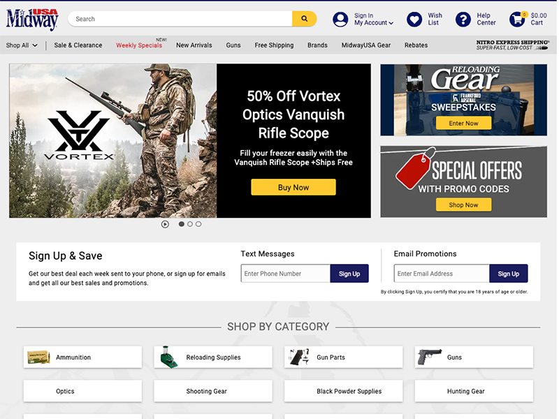
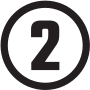
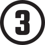
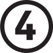

WEBSITE FEATURE UX
Homepage Rotator Feature
ROLE: Research analysis, Wireframing, and High-fidelity mockups
How does a UX designer balance user needs and business needs? Sometimes business objectives make it hard. But as UX designers, we should attempt to champion UX as much as possible.
-
Product Definition
On this project, the UX team was asked to design and implement a homepage rotator. The website, at that time, had a static viewport-width banner. Stakeholder business initiatives asked for additional promos on the website, including having rotators.
User Empathy & Research
There are times when business objectives and user needs contrast. Based upon benchmarking and research, homepage rotators aren't as effective for information to be seen by the user. However, the UX team was asked to include a rotator in our designs.
Ideate & Prototypes
The concept I focused on was to feature multiple panels with a large main banner and two smaller components. The main banner could be a rotator or static image— potentially solving the business objectives of having a rotator and making it useful for the user. I hypothesized that if testing found the rotator unuseful then options for presenting multiple promos remained without further iterations.
I wireframed this concept in multiple designs. As a team we presented all of the wireframe concepts and utilized dot-voting. My wireframes recieved some of the top voting dots. I was then tasked to create high-fidelity mockups.
Iteration & Feedback
I produced a number of high-fidelity designs in Adobe Xd based on the original wireframes. Iterations were made based upon stakeholder feedback.
Implementation
I handed this project off to the appropriate design and development team for implementation.